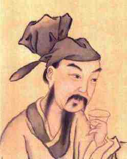

| 山行 |
|
远上寒山石径斜，白云深处有人家。 停车坐爱枫林晚，霜叶红于二月花。 |
| 作者杜甫资料 |
|

|
| 山行原文及翻译赏析 |
|
这首诗描绘的是秋之色，展现出一幅动人的山林秋色图。诗里写了山路、人家、白云、红叶，构成一幅和 谐统一的画面。这些景物不是并列的处于同等地位，而是有机地联系在一起，有主有从，有的处于画面的中心，有的则处于陪衬地位。简单来说，前三句是宾，第四句是主，前三句是为第四句描绘背景、创造气氛，起铺垫和烘托作用的。 “远上寒山石... |
|
注释 山行：在山中行走。 远上：登上远处的。 寒山：深秋季节的山。 石径：石子的小路。 斜：此字读xiá ，为倾斜的意思。 深：另有版本作“生”。（“深”可理解为在云雾缭绕的的深处； “生”可理解为在形成白云的地方） 车：轿子。 坐：因为。 霜叶：枫树的叶子经深秋寒霜之后变成了红色。 枫林晚：傍晚时的枫树... |
|
《山行》是诗人杜牧的一首描写和赞美深秋山林景色的七言绝句。这首诗描绘的是秋之色，展现出一幅动人的山林秋色图，山路、人家、白云、红叶，构成一幅和谐统一的画面。在这首诗中，杜牧以情驭景，敏捷、准确地捕捉足以体现自然美的形象，并把自己的情感融汇其中，使情感美与自然美水乳交融，情景互为一体。 全诗构思新颖，布局精巧，于萧瑟秋风... |